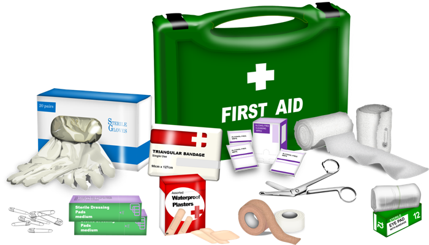

General Kit:
|

|
Comprehesive Kit:
- Alcohol wipes
- Antibacterial hand gel or wipes
- Antibiotic ointment packets
- Antiseptic cream or wipes
- Antiseptic solution (e.g., hydrogen peroxide)
- Bandages, adhesive and triangular
- Cold packs (instant cold compresses)
- Cotton balls
- Elastic roller bandage
- Eye pads
- Gauze roller bandage
- Gloves (latex or nonlatex)
- Shortening or rotation of the limb
- Iodine wipes
- Insect sting relief
- Moleskin
- Steri-Strips
- Tape (adhesive)
- Vaseline petroleum jelly
- Acetaminophen (Tylen): Relieves pain and reduces fever
- Antacid tablets: Relieve stomach indigestion
- Antihistamine (diphenhydramine [Benadryl]): Relieves sneezing, itchy and watery eyes from an allergy; also relieves itchiness from insect bites and stings and from poison ivy, oak, and sumac
- Antifungal cream or ointment
- Aspirin: Relieves pain and reduces fever and inflammation (redness and swelling)
- Calamine lotion: Anti-itching lotion treats mild sunburn, insect bites and stings, and rashes from poison ivy, oak, and sumac
- Cough suppressant
- Decongestant tablets EpiPen: Prescription medication (epinephrine) in an injectable form counteracts life-threatening allergic reactions
- Hydrocortisone (1%) cream or packet: Relieves minor skin irrita- tions, itches, and rashes
- Ibuprofen (Motrin, Advil): Relieves pain and reduces fever and inflammation (redness and swelling)
- Laxative: Relieves constipation
- Loperamide (Imodium): Relieves diarrhea
- Motion sickness tablets (dimenhydrinate [Dramamine]): Relieve nausea, vomiting, or dizziness associated with motion sickness
- Nasal spray: Relieves symptoms of colds, stuffy nose, or blocked sinuses
- Prescription medications: Especially for asthma, heart disease, diabetes, or high blood pressure